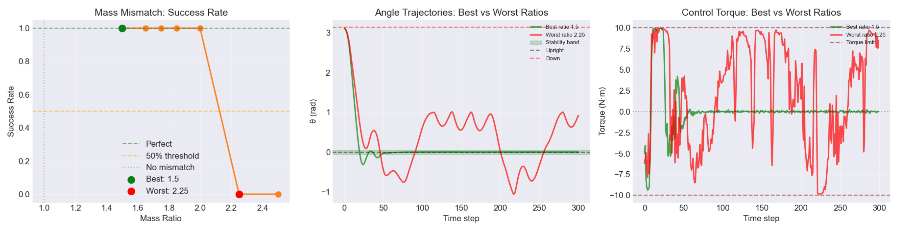
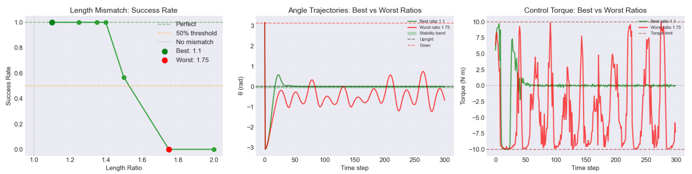
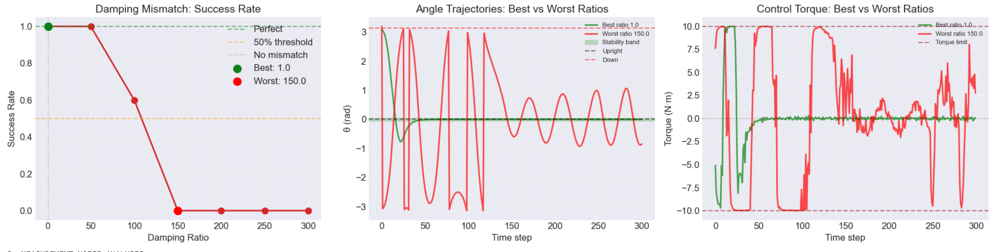
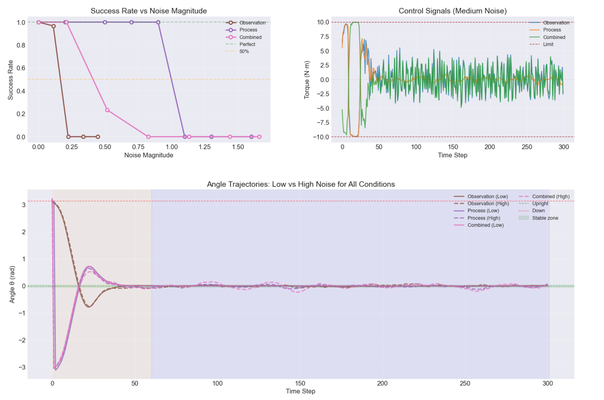

Overview
This project systematically evaluates the robustness of sampling-based Model Predictive Control
(MPC) using the Cross-Entropy Method (CEM) for nonlinear control tasks. Using pendulum swing-up
as a benchmark, I analyzed how parametric mismatches and sensor noise degrade controller performance,
identifying critical failure thresholds and providing practical design guidance for real-world deployment.
Key Technical Contributions
- Implemented phase-aware CEM-MPC with adaptive horizon (60 steps swing-up / 30 steps stabilization)
- Built modular JAX-based simulation framework for systematic robustness testing (30 trials per condition)
- Quantified sensitivity to mass, length, and damping mismatches (30+ parameter combinations)
- Analyzed observation vs process noise effects (Gaussian, 8+ noise levels each)
- Developed normalized cross-dimensional sensitivity metric for comparing different uncertainty types
Core Results

Mass mismatch: 100% success up to 2.0×, collapses at 2.25×

Length mismatch: drops to 56.7% at 1.5×, fails completely at 1.75× — most sensitive parameter

Damping mismatch: 100% success up to 50×, partial success (60%) at 100× — remarkably robust
Parameter Mismatch Sensitivity
- Length: Most critical — fails at 1.5× mismatch (56.7% success)
- Mass: Moderate tolerance — maintains 100% success up to 2.0×
- Damping: Highly robust — 100% success up to 50×, partial success to 100×

Noise sensitivity comparison: observation noise fails at ~3.2% of operational range, process noise at ~11% of control authority. Combined noise shows earlier, more severe degradation due to non-linear interactions.
Noise Sensitivity
- Observation noise: Sharp threshold at σθ ≈ 0.10 rad (~3.2% of half-circle)
- Process noise: Maintains 100% success up to 0.90 N·m, fails at 1.10 N·m (~11% of control authority)
- Combined noise: Synergistic failure — 23.3% success at moderate levels
Stress Test (Combined Mismatch + Noise)
- Overall success rate: 39.3% under realistic uncertainty
- Stabilization time increased 5× (44.7 → 229.6 steps)
- Length mismatch confirmed as dominant failure factor
Recommended Visuals
From your existing code, prioritize these 3 plots for the portfolio page:
Practical Design Guidance
- Prioritize length estimation — most sensitive parameter (fails at 50% overestimate)
- Angle sensors need precision < 0.05 rad — observation noise 3-4× more critical than process noise
- Expect "reality gap" cost — robust operation demands 3-5× longer stabilization time
- Test combined uncertainties — isolated tests miss synergistic failures
Technical Stack
- JAX: GPU-accelerated dynamics and CEM optimization
- Runge-Kutta 4: Numerical integration for pendulum dynamics
- Cross-Entropy Method: Derivative-free trajectory optimization
- Phase-aware architecture: Adaptive horizon and cost function switching
Industry Applications
This work demonstrates skills directly applicable to:
- Robust control systems: Safety-critical applications (autonomous vehicles, industrial automation)
- Model-based RL/control: System identification and uncertainty quantification
- Validation & testing: Systematic robustness evaluation for deployed controllers
- Simulation engineering: Building modular testing frameworks for control algorithms